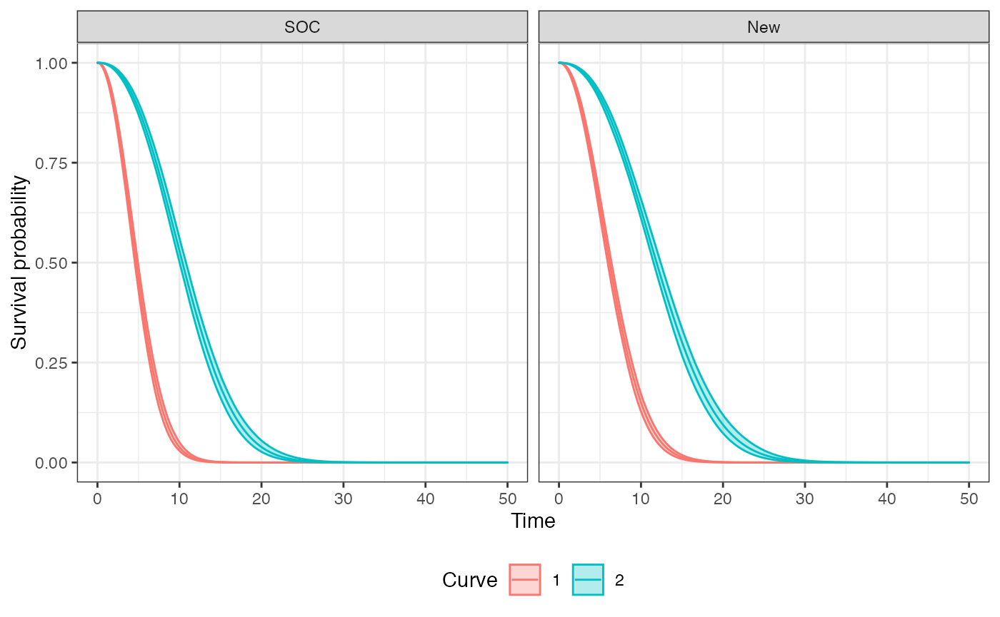

Overview
While multi-state models can be used to estimate the parameters of a state transition model (STM) in a very flexible manner, data availability can make it difficult (or infeasible) to fit such a model. This is often the case when an evidence synthesis model based on summary level data is used to parameterize the STM. For example, in oncology, published articles of clinical trials often provide survival curves of progression-free survival (PFS) and overall survival (OS), but do not release information on time to event (and censoring) for each transition. In this setting partitioned survival analysis may consequently be a simpler approach.
We will use the same packages as in the “Semi-Markov Multi-state Model” tutorial.
Theory
An 3-state partitioned survival model (PSM) simulates the probability that a patient is in each of 3 distinct health states at a given point of time when treated by a particular therapy. State membership is estimated from 2 survival curves (e.g., PFS and OS) using an “area under the curve” approach. Specifically, letting \(S_{PFS}(t)\) be the PFS survival curve and \(S_{OS}(t)\) be the OS curve, the probabilities of being in the stable, progression, and death states at time \(t\) are \(S_{PFS}(t)\), \(S_{OS}(t) - S_{PFS}(t)\), and \(1 - S_{OS}(t)\), respectively. For a more general N-state case, refer to the hesim vignette on partitioned survival models (PSMs) and the NICE Decision Support report on partitioned survival analysis.
Partitioned survival analysis can also be used to parameterize a time-inhomogeneous cohort discrete time state transition model (cDTSTM). This approach is identical to the PSM, except that discrete model cycles must be used. In a 3-state model, the transition probability matrix at time \(t\) is given by,
\[
\begin{pmatrix}
C & p_1 - p_2 & p_2\\
0 & C & p_2 \\
0 & 0 & 1,
\end{pmatrix}
\] where \(C\) is refers to complement of the sum of the remaining elements in a row and \(p_1\) and \(p_2\) are transition probabilities derived from survival curves. In the PFS and OS example with model cycles of length \(u\), \(p_1 = 1 - s_{PFS}(t)/s_{PFS}(t-u)\) and \(p_2 = 1 - s_{OS}(t)/s_{OS}(t-u)\). From this matrix, one can immediately see that a PSM—in contrast to a multi-state model—make the implausible assumption that the probability of a transition from stable to death and from progression to death are equal. See the heemod vignette on survival models for an example cDTSTM based on a partitioned survival analysis.
Model setup
We set up the model in the same way as in the multi-state model, except that since PSMs are cohort models, we no longer need to simulate a large number of patients to compute expected values. Instead, we will simulate separate cohorts of representative patients of varying ages and sexes. The overall estimates are (weighted) averages across patients, although in this example we will assume that each representative patient should receive equal weight. Note that we could have also used grp_id option in hesim::hesim_data() to assign patients to groups so that we could conduct subgroup analysis.
patients <- data.table(
patient_id = 1:4,
patient_wt = rep(1/4, 4), # Each patient has same weight
age = c(45, 45, 65, 65),
female = c(0, 1, 0, 1)
)
states <- data.table(
state_id = c(1, 2),
state_name = c("Stable", "Progression") # Non-death health states
)
strategies <- data.frame(
strategy_id = 1:2,
strategy_name = c("SOC", "New")
)
hesim_dat <- hesim_data(
patients = patients,
strategies = strategies,
states = states
)
print(hesim_dat)## $strategies
## strategy_id strategy_name
## 1 1 SOC
## 2 2 New
##
## $patients
## patient_id patient_wt age female
## 1: 1 0.25 45 0
## 2: 2 0.25 45 1
## 3: 3 0.25 65 0
## 4: 4 0.25 65 1
##
## $states
## state_id state_name
## 1: 1 Stable
## 2: 2 Progression
##
## attr(,"class")
## [1] "hesim_data"As in the multi-state modeling tutorial, we will use get_labels() to assign labels to the ID variables in order to facilitate nicer presentation of results.
labs <- get_labels(hesim_dat)Parameter estimation
Survival models
Multi-state models estimate the hazards between all transitions in an integrated manner. PSMs are, in contrast, parameterized by estimating separate survival models for different endpoints. The data consists of one row per patient. In the oncology example, the two endpoints are PFS and OS. We leverage the function as_pfs_os() from the hesim package to create such data.
onc3 <- hesim::onc3[strategy_name != "New 1"]
onc3[, strategy_name := droplevels(strategy_name)]
levels(onc3$strategy_name) <- c("SOC", "New")
surv_est_data <- as_pfs_os(onc3, patient_vars = c("patient_id", "female", "age",
"strategy_name"))
surv_est_data[patient_id %in% c(1, 2)]## patient_id female age strategy_name pfs_time pfs_status os_status
## 1: 1 0 59.85813 New 2.420226 1 1
## 2: 2 0 62.57282 New 7.497464 0 0
## os_time
## 1: 14.620258
## 2: 7.497464To maintain consistency with the multi-state model, we will fit Weibull survival models for both PFS and OS and include an indicator for female as a covariate. The PFS and OS fits are stored in a hesim::flexsurvreg_list, which is just a list of models fit using flexsurv::flexsurvreg().
fit_pfs_wei <- flexsurv::flexsurvreg(
Surv(pfs_time, pfs_status) ~ strategy_name + female,
data = surv_est_data,
dist = "weibull")
fit_os_wei <- flexsurvreg(
Surv(os_time, os_status) ~ strategy_name + female,
data = surv_est_data,
dist = "weibull")
psfit_wei <- flexsurvreg_list(fit_pfs_wei, fit_os_wei)Utility and costs
Utility and medical costs are setup in the exact same way as in the multi-state model.
# Utility
utility_tbl <- stateval_tbl(
data.table(state_id = states$state_id,
mean = c(.8, S = .6),
se = c(0.02, .05)
),
dist = "beta"
)
print(utility_tbl)## state_id mean se
## 1: 1 0.8 0.02
## 2: 2 0.6 0.05
# Medical costs
medcost_tbl <- stateval_tbl(
data.table(state_id = states$state_id,
mean = c(2000, 9500),
se = c(2000, 9500)
),
dist = "gamma"
)
print(medcost_tbl)## state_id mean se
## 1: 1 2000 2000
## 2: 2 9500 9500Treatment costs are, on the other hand, treated slightly differently. Since the model is not semi-Markov, they cannot vary as a function of time since entering the progression state. One way to accommodate this is to use the survival models for PFS and OS fits to parameterize a cDTSTM as described above and create a number of tunnel states following progression. For instance, if we constructed a model with monthly cycles, then 4 progression states would be required (progression month 1, progression month 2, progression month 3, and progression month > 3). However, for simplicity, we will assume treatment costs are constant in the progression state and continue to use the area under the curve approach.
drugcost_tbl <- stateval_tbl(
data.table(strategy_id = strategies$strategy_id,
est = c(2000, 12000)),
dist = "fixed"
)
print(drugcost_tbl)## strategy_id est
## 1: 1 2000
## 2: 2 12000Simulation
Constructing the economic model
As in all models that perform probabilistic sensitivity analysis (PSA), we set the number of PSA iterations. Note that we use a smaller number of iterations because will will sample parameters from the survival models using bootstrapping, which takes longer to run than sampling directly from probability distributions like we have done previously. For instance, in the multi-state model, we sampled the parameters from their multivariate normal asymptotic distribution.
n_samples <- 100Survival models
Survival predictions are made as a function of the fitted Weibull models and input data. The latter consists of each treatment strategy and patient combination.
# Input data for survival models
survmods_data <- expand(hesim_dat, by = c("strategies", "patients"))
print(survmods_data)## strategy_id patient_id strategy_name patient_wt age female
## 1: 1 1 SOC 0.25 45 0
## 2: 1 2 SOC 0.25 45 1
## 3: 1 3 SOC 0.25 65 0
## 4: 1 4 SOC 0.25 65 1
## 5: 2 1 New 0.25 45 0
## 6: 2 2 New 0.25 45 1
## 7: 2 3 New 0.25 65 0
## 8: 2 4 New 0.25 65 1In addition, we must also specify arguments related to the PSA. As mentioned above, we sample the parameters via bootstrapping, whereby the survival models are refit repeatedly to resamples of the estimation dataset. The advantage of this approach is that it preserves the correlation between PFS and OS and ensures that the curves do not cross.
survmods <- create_PsmCurves(psfit_wei,
input_data = survmods_data,
n = n_samples,
uncertainty = "bootstrap",
est_data = surv_est_data)Utility and cost models
The same code from the multi-state model is used to setup the cost and utility models.
# Utility
utilitymod <- create_StateVals(utility_tbl, n = n_samples,
hesim_data = hesim_dat)
# Costs
drugcostmod <- create_StateVals(drugcost_tbl, n = n_samples,
hesim_data = hesim_dat)
medcostmod <- create_StateVals(medcost_tbl, n = n_samples,
hesim_data = hesim_dat)
costmods <- list(Drug = drugcostmod,
Medical = medcostmod)Combining the disease progression, cost, and utility models
As in the multi-state model, we initialize the economic model by combining the disease, utility, and costs models using the $new() method.
econmod <- Psm$new(survival_models = survmods,
utility_model = utilitymod,
cost_models = costmods)Simulating outcomes
Survival curves
Once the PSM has been initialized, the $sim_survival() method can be used to generate survival curves for each endpoint.
times <- seq(0, 50, by = .1)
econmod$sim_survival(t = times)
autoplot(econmod$survival_, ci = TRUE,
labels = labs)
We can, in theory, plot these curves for each treatment strategy and patient. To summarize, however, we will plot the average (across patients) survival curves for each treatment strategy. The probabilities of being in the stable, progression, and death states are the area under the PFS curves, the area between the OS and PFS curves, and the area above the OS curve, respectively.

Health state probabilities
These health state probabilities are computed using the $sim_stateprobs() method. For example, let’s look at probabilities in the progression state at year 12 using the first PSA sample.
econmod$sim_stateprobs()
econmod$stateprobs_[sample == 1 & state_id == 2 & t == 12]## sample strategy_id patient_id grp_id patient_wt state_id t prob
## 1: 1 1 1 1 0.25 2 12 0.3677102
## 2: 1 1 2 1 0.25 2 12 0.3101250
## 3: 1 1 3 1 0.25 2 12 0.3677102
## 4: 1 1 4 1 0.25 2 12 0.3101250
## 5: 1 2 1 1 0.25 2 12 0.4374124
## 6: 1 2 2 1 0.25 2 12 0.4317433
## 7: 1 2 3 1 0.25 2 12 0.4374124
## 8: 1 2 4 1 0.25 2 12 0.4317433Cost-effectiveness analysis
Since the cost and QALY output is the same regardless of the model type, the cost-effectiveness analysis (CEA) proceeds in the same way as when using the Markov cohort and multi-state modeling approaches.
ce_sim <- econmod$summarize()
cea_pw_out <- cea_pw(ce_sim, comparator = 1, dr_qalys = .03, dr_costs = .03)
format(icer(cea_pw_out, labels = labs))## Outcome New
## 1: Incremental QALYs 0.88 (0.61, 1.17)
## 2: Incremental costs 102,746 (92,119, 113,340)
## 3: Incremental NMB -58,941 (-70,112, -48,391)
## 4: ICER 117,277